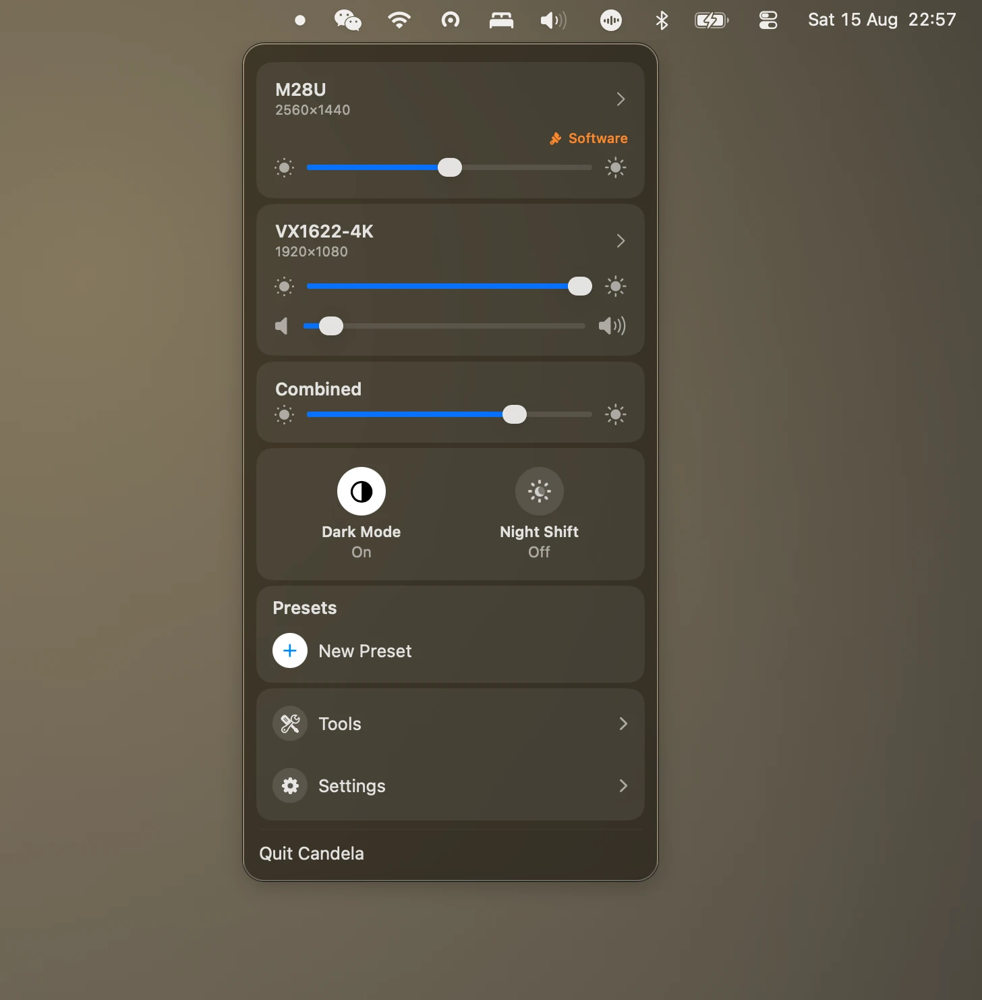
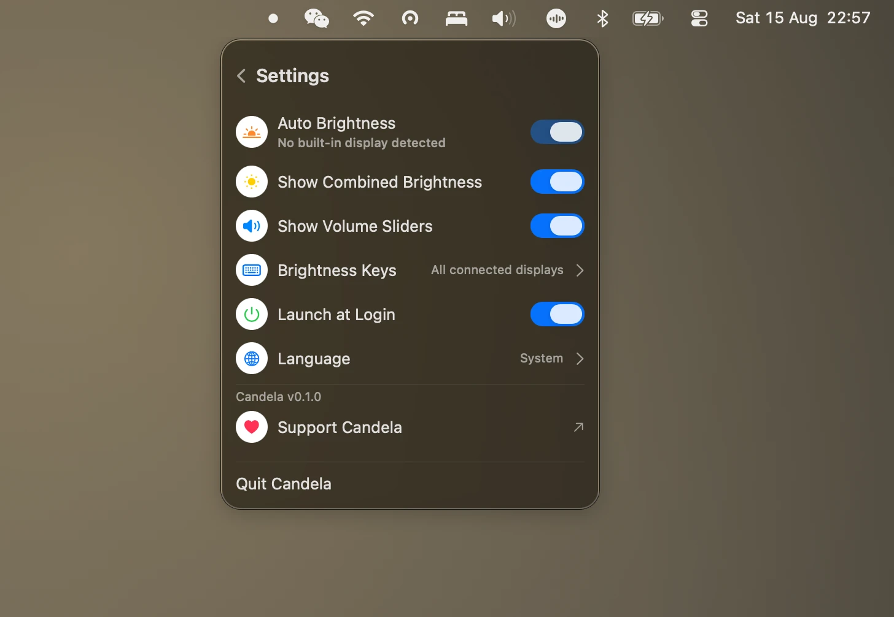
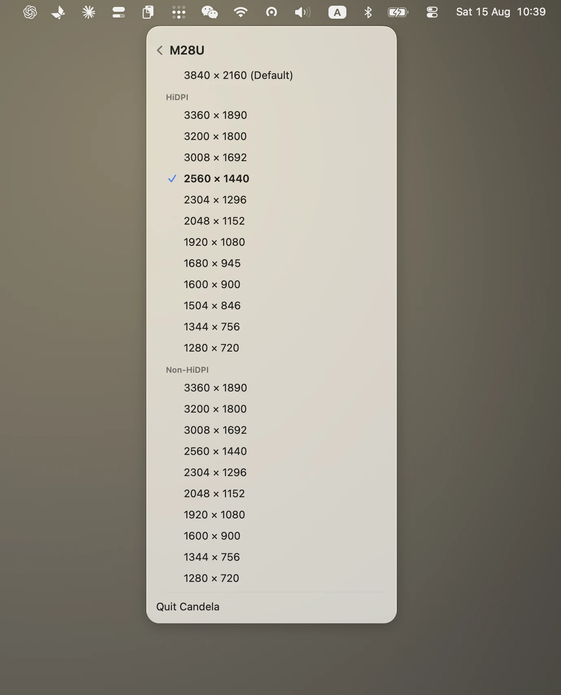
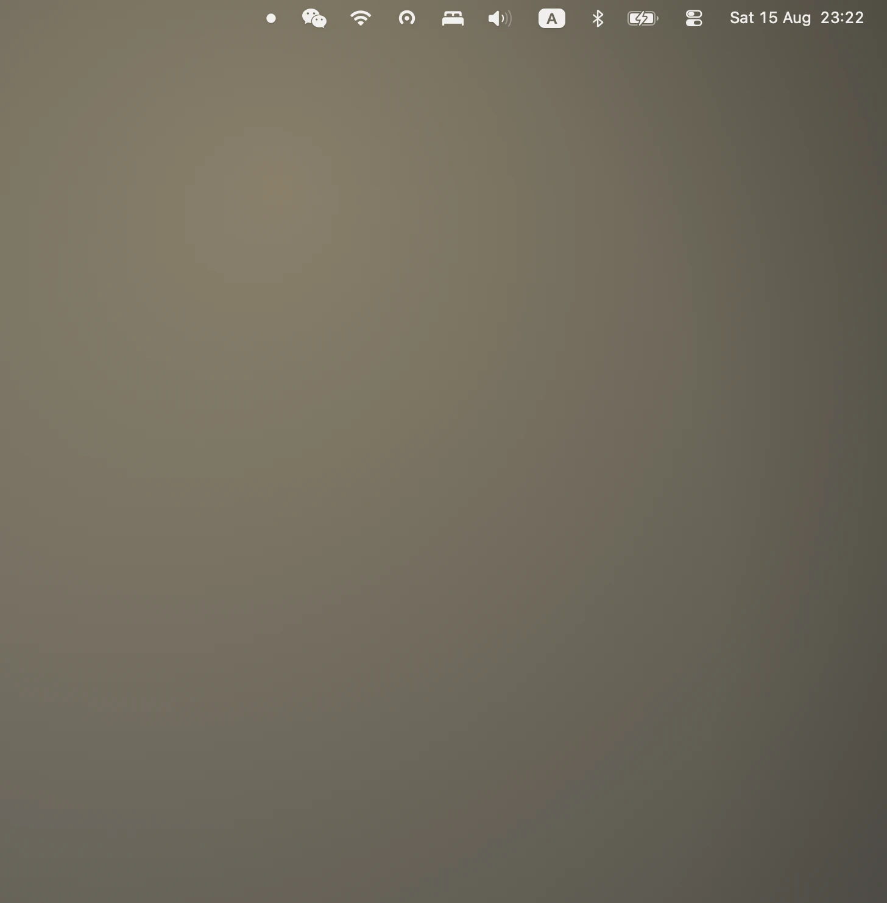
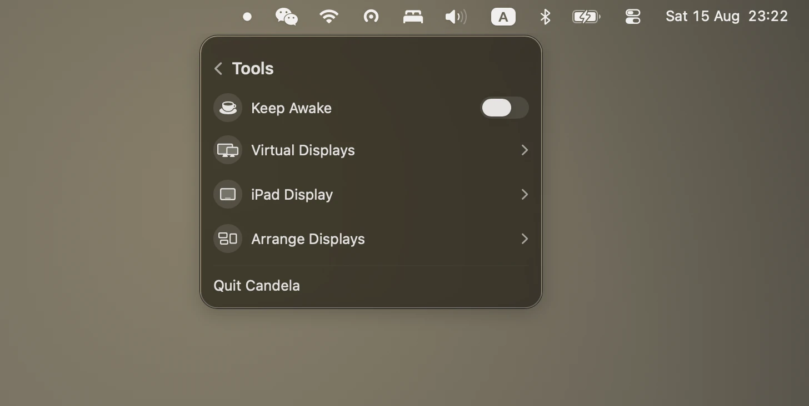

Every display control macOS hides, in one menu bar panel
Candela gives external monitors on your Mac the controls the system keeps for the built-in screen: real brightness over DDC, sharp HiDPI scaling, brightness keys that work on every display, presets, and virtual screens.
macOS 26 · Apple silicon · MIT licence · no Pro tier, no licence key

Three things stop working
Plug a monitor into a Mac and the brightness keys adjust nothing, the resolution list offers a handful of blurry options and hides the sharp ones, and there is no way to move every display at once. Candela puts all three back, in a panel that behaves like Control Centre rather than a preferences window.
Brightness that reaches the backlight
- DDC/CI over the video cable — the same channel the monitor's own buttons use
- Displays that refuse DDC fall back to gamma dimming, marked Software so you know
- Volume too, on monitors that answer for it

Brightness keys, on any display
- Follow the pointer, drive every display, or drive them all as one
- Or only the displays you pick, leaving a TV or a colour-critical panel alone
- One Accessibility permission, no restart

Sharp HiDPI on any monitor
- The 2×-rendered modes macOS hides on third-party displays
- A 1440p or 4K panel becomes readable and sharp, instead of one or the other
- Refresh rate on the same page, so a scaled mode cannot quietly cost you 60 Hz

Displays that match each other
- One slider for the whole desk
- Plus a floor you calibrate by eye, per display, because the same percentage does not make two panels emit the same light
- Nothing goes black while its neighbour is still lit

Presets, arrangement, virtual screens
- Save a whole desk — resolutions, brightness, arrangement — and restore it in a click
- Drag displays into position without opening System Settings
- Create a virtual screen for recording, or connect an iPad over Sidecar
Nothing, and there is no second tier
There is no Pro tier, no licence key, no daily limit, and no feature held back. The whole app is MIT-licensed and the source is on GitHub. If it is useful, Ko-fi is there; nothing in the app changes if you never click it.
That is the main difference from the alternatives. BetterDisplay gives away a capable free tier but keeps flexible HiDPI scaling, virtual screens, display disconnect and advanced shortcuts for Pro at $21.99. Lunar is open source and $23 for a lifetime licence, with the free build capped at 100 brightness adjustments a day. Both are good software. Candela's answer to "which features do I get" is simply "all of them".
Start here
- Fix a blurry external monitor on macOS — why text looks soft on a 1440p or 4K display, and what actually sharpens it
- How to enable HiDPI on a Mac — what HiDPI is, and how to turn it on for a display macOS will not offer it to
- Make the brightness keys work on an external monitor — F1 and F2 on any display, and the permission that makes it possible
- Sync brightness across multiple monitors — one slider for the whole desk, and how to make panels actually match
Two ways
Download the DMG and drag Candela to Applications, or use Homebrew:
brew install --cask iamzifei/tap/candela
Candela is signed with a Developer ID and notarised by Apple, so it opens without right-click warnings.
What you need
- macOS 26 or later
- Apple silicon
- For brightness keys: one Accessibility permission, which macOS asks for the first time you enable the feature
- For hardware brightness on an external display: DDC/CI enabled in the monitor's own on-screen menu. Most monitors ship with it on; a few, and some USB-C docks, do not pass it through